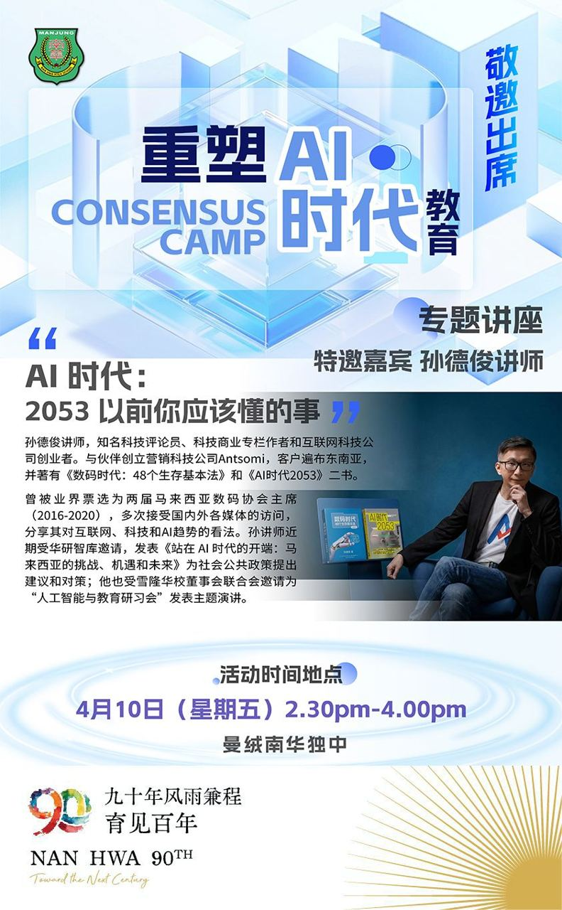

南华独中90年校庆系列活动 之
南华独中90年校庆系列活动 之
重塑AI时代教育研讨会
站在曼绒南华独立中学创校 90 周年的历史交汇点，我们不仅回望过去的教育初心，更以前瞻视野观测时代巨变。
当 AI 技术重构社会逻辑，当哲学思考回归教育本质，教育工作者与育人者该如何自处？本次教育研讨会特别邀请业内资深专家，针对“人工智能的冲击”与“哲学教育的真实价值”两大核心课题展开深度对话。
我们诚邀教育同仁及各界人士，共同探讨在技术与人文的碰撞下，教育如何实现本质的重塑与跨越——
【AI 时代：2053 以前你应该懂的事】
AI Era: What You Should Know Before 2053
孙德俊讲师 Mr. Serm Teck Choon
2026 年 4 月 10 日（星期五 Friday） 2.30pm - 4.00pm
有意者报名参加者欢迎线上报名，
链接附在本贴文留言处，
若有疑问，亦可于办公时间联系本校成查询：
01164646267 / 01161626358
